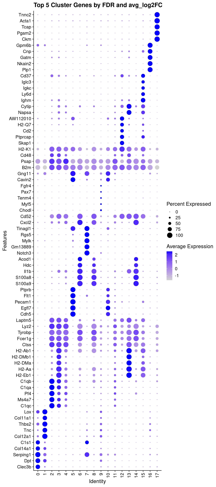
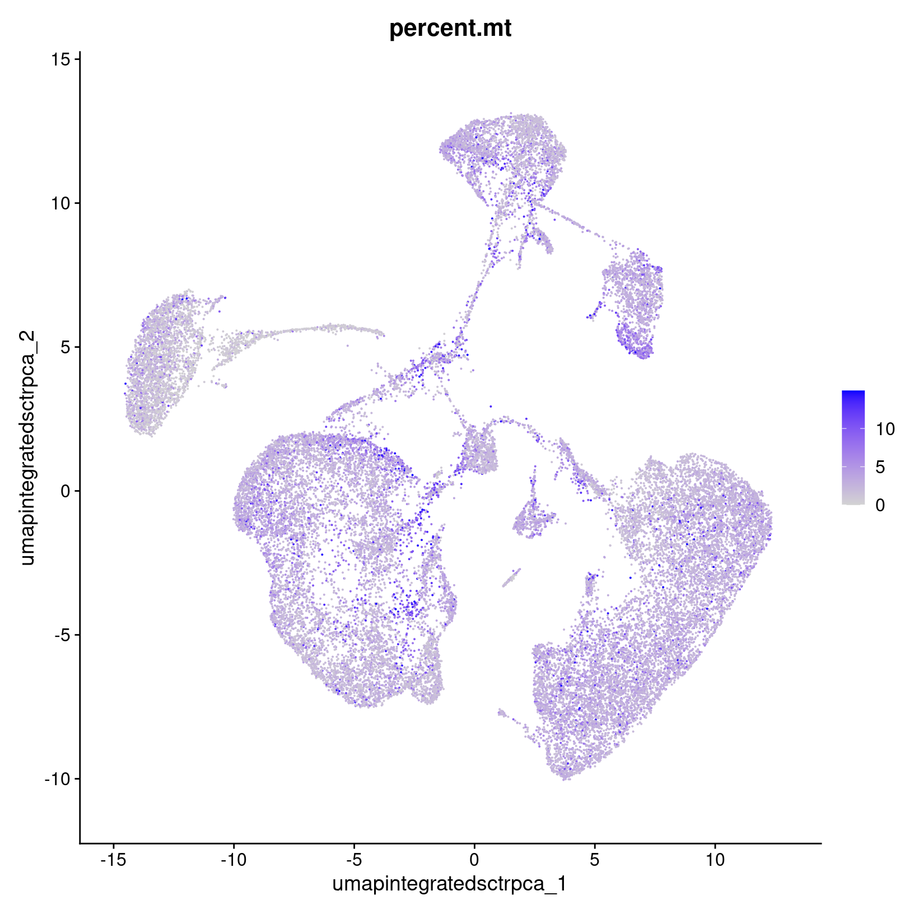

Marker identification and visualization
UM Bioinformatics Core Workshop Team
2025-04-14
Workflow Overview
Introduction
| Starting with numbered cluster data, gene expression is compared between cells in one cluster versus cells in all other clusters - ignoring sample/condition at this step - to characterize the similarities and differences between clusters. |
To interpret our initial clustering result, we need to have a better
understanding of what biologically relevant populations the clusters
might correspond to across all samples or conditions.
Objectives
- Determine gene markers for each of the initial clusters using
FindAllMarkers() - Visualize expression across clusters for genes of interest using
DotPlot()
This process can be highly variable, from seeing one set of well-characterized marker genes as the top markers for each cluster to having . Like the previous sections, this step may need to be iterated.
Cluster markers and characterization
After generating clusters, we need to perform differential expression analysis to identify the genes that distinguish those clusters (source). This should allow us to get visibility on some key questions for our clusters, as highlighted by the HBC materials, namely:
- Are there are biologically meaningful gene expression differences between the clusters?
- Does the gene expression of the generated clusters correspond to expected cell-types or sub-types?
- Are there clusters with similar expression that should be combined and/or clusters that might need to be sub-clustered into smaller populations?
Many of the differential expression (DE) tools designed for bulk RNA-seq samples have been benchmarked for performance on scRNA-seq in Soneson and Robinson (2018) and there are also dedicated DE tools for scRNA-seq, like MAST, that use models that account for the expected sparse structure of scRNA-seq data. However in our and others’ experience, the default Wilcoxon test is often sufficient for simple pairwise DE comparisons, while edgeR (Robinson, McCarthy, and Smyth 2010) is recommended by the Ouyang Lab for more complex comparison designs, such as those that include covariates.
Additional considerations for differential expression
The Ouyang Lab has a section of their tutorial that discusses the methods available for differential expression including some highlighted in the figure below, as well as a more extensive section on threshold considerations, while the HBC section on marker genes identification highlights the different types of marker identification options available via Seurat.Marker identification
First, we’ll change identities of the cells to
“integrated.sct.rpca.clusters” explicitly with SetIdent().
The “seurat_clusters” column is the default column for cell identities
and changes each time a new clustering is performed. Then, we’ll ensure
that the correct resolution is selected from our Seurat object and then
we’ll use the PrepSCTFindMarkers() function
in preparation for DE comaprisons to “reverse the individual SCT
regression model using minimum of median UMI as the sequencing depth
covariate” according to the Seurat
documentation. Remember that we’ve performed integration and
clustering to assign the cells to clusters regardless of their
experimental condition but that we now want to ensure that the data is
normalized but not with the SCTransformation scaling needed for the
previous steps.
Then we’ll run theFindAllMarkers() function
to generate comparisons between each cluster and all other cells,
regardless of the experimental group. Note - the statistical test to
perform can be specified in FindAllMarkers(), but the
default is a Wilcoxon test.
# =========================================================================
# Marker identification and visualization
# =========================================================================
# -------------------------------------------------------------------------
# Find empirical markers
# Prep for cluster comparisons
geo_so = SetIdent(geo_so, value = 'integrated.sct.rpca.clusters')
geo_so = PrepSCTFindMarkers(geo_so)
# Run comparisons for each cluster to generate markers
geo_markers = FindAllMarkers(geo_so, only.pos = TRUE, min.pct = 0.05)
# Write out full cluster marker results to file
write_csv(geo_markers, file = 'results/tables/marker_genes_0.4res.csv')
# Take a look at the first few rows of the result
head(geo_markers) p_val avg_log2FC pct.1 pct.2 p_val_adj cluster gene
Clec3b 0 5.451670 0.811 0.063 0 0 Clec3b
Dpt 0 3.412710 0.876 0.154 0 0 Dpt
Serping1 0 3.453869 0.953 0.238 0 0 Serping1
Col14a1 0 3.678682 0.769 0.113 0 0 Col14a1
C1s1 0 3.299230 0.748 0.098 0 0 C1s1
Fbn1 0 2.975064 0.898 0.258 0 0 Fbn1After running SetIdent(), cells in our Seurat object are
identified by the numeric cluster they belong to, instead of the unique
identifiers that are the default identities after reading in the
data.

Seurat v5 improvements
For marker generation, Seurat v5 uses the presto package to reduce the time required to run DE comparisons, particularly for large datasets. For users who are not using presto, Seurat recommends increasing the min.pct and logfc.threshold parameterscto increase the speed of DE testing (source).Note that over-interpretation of these results should be avoided, since each cell is used as a replicate in these comparisons which can lead to inflated (e.g. very low) p-values, the top markers are more likely to be trustworthy (source).
Therefore, it’s useful to filter the results to highlight the top positive markers (since a positive fold-change would mean that gene is more highly expressed in the cluster compared to all other cells), before looking at our results
# -------------------------------------------------------------------------
# Identify marker genes for each cluster
# Create table of top 5 markers per cluster (using default ranking)
top_5 = geo_markers %>% filter(p_val_adj < 0.01) %>% group_by(cluster) %>% slice_head(n = 5)
# Look at results
head(top_5, n = 10)# A tibble: 10 × 7
# Groups: cluster [2]
p_val avg_log2FC pct.1 pct.2 p_val_adj cluster gene
<dbl> <dbl> <dbl> <dbl> <dbl> <fct> <chr>
1 0 5.45 0.811 0.063 0 0 Clec3b
2 0 3.41 0.876 0.154 0 0 Dpt
3 0 3.45 0.953 0.238 0 0 Serping1
4 0 3.68 0.769 0.113 0 0 Col14a1
5 0 3.30 0.748 0.098 0 0 C1s1
6 0 4.20 0.962 0.145 0 1 Col12a1
7 0 3.85 0.869 0.11 0 1 Tnc
8 0 3.78 0.924 0.166 0 1 Thbs2
9 0 4.98 0.812 0.07 0 1 Col11a1
10 0 2.90 0.921 0.18 0 1 Lox # -------------------------------------------------------------------------
# Optional - Create table of top 5 markers per cluster (ranked by logFC)
top_5_by_log2FC = geo_markers %>%
group_by(cluster) %>%
arrange(p_val_adj, desc(avg_log2FC)) %>%
slice_head(n = 5)
# Look at results after ranking
# Note difference in pct.1 column between tables
head(top_5_by_log2FC, n = 10) # A tibble: 10 × 7
# Groups: cluster [2]
p_val avg_log2FC pct.1 pct.2 p_val_adj cluster gene
<dbl> <dbl> <dbl> <dbl> <dbl> <fct> <chr>
1 0 6.73 0.094 0.001 0 0 Serpina3c
2 0 6.71 0.167 0.002 0 0 C7
3 0 6.44 0.084 0.001 0 0 Nat8f7
4 0 6.16 0.106 0.002 0 0 Gm36107
5 0 6.01 0.124 0.002 0 0 Lvrn
6 0 6.37 0.144 0.004 0 1 Cilp2
7 0 6.11 0.095 0.003 0 1 Ucma
8 0 5.81 0.473 0.015 0 1 Scx
9 0 5.56 0.09 0.003 0 1 Matn3
10 0 5.54 0.144 0.007 0 1 Kera We expect to see several columns:
gene: gene symbolp_val: p-value not adjusted for multiple test correctionavg_logFC: average log fold change. Positive values indicate that the gene is more highly expressed in the cluster.pct.1: percentage of cells where the gene is detected in the clusterpct.2: percentage of cells where the gene is detected on average across all other clustersp_val_adj: adjusted p-value based on bonferroni correction using all genes in the dataset, used to determine significancecluster: cluster represented bypct.1and for which the statistics in the row are reported
When looking at the output, it is important to prioritize marker genes with both larger fold-change differences and larger difference between pct.1 and pct.2, particularly if pct.1 is high (e.g. if 80% of cells in the cluster evaluated express the gene that more reliable than if only 20% of cells express that gene) (source).
Marker visualization
Now that we have generated a set of marker genes for our clusters, it
is useful to visualize the expression of those markers to aid in
evaluating them. While the expression of individual genes per cell can
be overlaid on our UMAPs (as with the FeaturePlot() function),
it’s often more useful to visualize the expression of multiple genes
simultaneously. While there are multiple
methods supported by Seurat for visualizing marker gene expression,
a heatmap or a related plot called a dotplot are commonly used.
We’ll use the DotPlot() function with
the SCT values to visualize the top 5 marker genes per cluster:
# -------------------------------------------------------------------------
# Visualize top marker genes as dot plot
top_5_sct_dot_plot = DotPlot(geo_so, features = unique(top_5$gene)) +
theme(axis.text.x = element_text(angle = 90, hjust = 1, vjust = 0.5)) +
labs(title = 'Top 5 Cluster Genes by FDR and avg_log2FC') + coord_flip()
top_5_sct_dot_plot
# -------------------------------------------------------------------------
# Save dot plot of top marker genes
ggsave(filename = 'results/figures/markers_top_5_sct_dot_plot.png',
plot = top_5_sct_dot_plot,
width = 8, height = 18, units = 'in') In the dotplot we can see that the color indicates the expression of the gene while the size of the dot indicates the proportion of cells expressing that gene in each cluster (source).
Using raw RNA values in Dotplots
In addition to plotting the SCT values, the raw or normalized RNA values can be plotted as well:
# -------------------------------------------------------------------------
# Add RNA values to dot plot
top_5_rna_dot_plot =
DotPlot(geo_so, features = unique(top_5_by_log2FC$gene), assay = 'RNA') +
theme(axis.text.x = element_text(angle = 90, hjust = 1, vjust = 0.5)) +
labs(title = 'Top 5 Cluster Genes by FDR and avg_log2FC') +
coord_flip()
ggsave(filename = 'results/figures/markers_top_5_rna_dot_plot.png',
plot = top_5_rna_dot_plot,
width = 8, height = 18, units = 'in')
Before proceeding with cluster annotations, we’ll also check the percentage of mitochondrial genes to determine if there are any clusters (or sub populations) that might correspond to interesting cell death patterns (or might indicate further filtering is needed):
# -------------------------------------------------------------------------
# Check mitochondrial gene expression
percent_mito_plot = FeaturePlot(geo_so, features='percent.mt')
# save to file
ggsave(filename = 'results/figures/percent_umap_mito_plot.png',
plot = percent_mito_plot,
width = 6, height = 6, units = 'in')
percent_mito_plot
We see that a higher % seem to be somewhat concentrated in a few places, but if cell death might be of interest for the research question, we’d want to consider investigating this pattern further by splitting up the plots by day and/or waiting until after running initial differential expression analysis to determine if these cell populations are interesting biology or not.
# -------------------------------------------------------------------------
# Remove the plot variables from the environment to avoid excessive memory usage
plots = c("top_5_sct_dot_plot",
"top_5_rna_dot_plot",
"percent_mito_plot")
# Only remove plots that actually exist in the environment
rm(list=Filter(exists, plots))
gc() used (Mb) gc trigger (Mb) max used (Mb)
Ncells 6688001 357.2 12036790 642.9 12036790 642.9
Vcells 334765795 2554.1 924386024 7052.6 924384578 7052.5Save our progress
Finally, we’ll create an output file for our updated Seurat object and for the cluster marker results:
# -------------------------------------------------------------------------
# Save Seurat object and gene marker data
saveRDS(geo_so, file = 'results/rdata/geo_so_sct_integrated_with_markers.rds')
saveRDS(geo_markers, file = 'results/rdata/geo_markers.rds')
Summary
| Starting with numbered cluster data, gene expression is compared between cells in one cluster versus cells in all other clusters - ignoring sample/condition at this step - to characterize the similarities and differences between clusters. |
In this section we:
- Discussed differential expression options
- Generated analytical marker genes for each cluster
Since marker genes alone might not be sufficient to determine cell-type or sub-type labels for our clusters so we will discuss other approaches to complement these results.
Next steps: Cell type prediction tools
These materials have been adapted and extended from materials listed above. These are open access materials distributed under the terms of the Creative Commons Attribution license (CC BY 4.0), which permits unrestricted use, distribution, and reproduction in any medium, provided the original author and source are credited.
| Previous lesson | Top of this lesson | Next lesson |
|---|